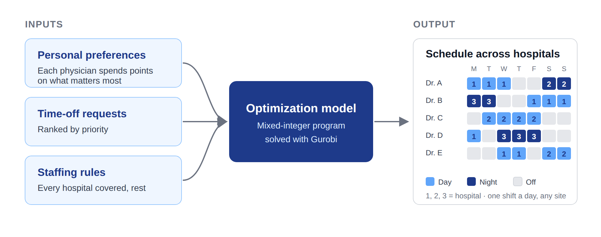
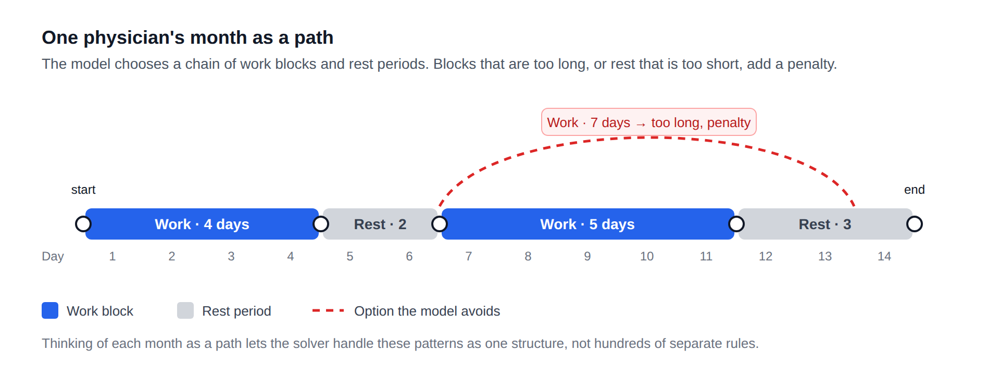
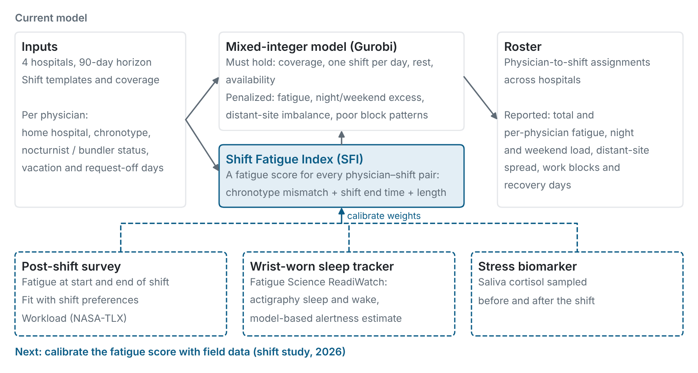
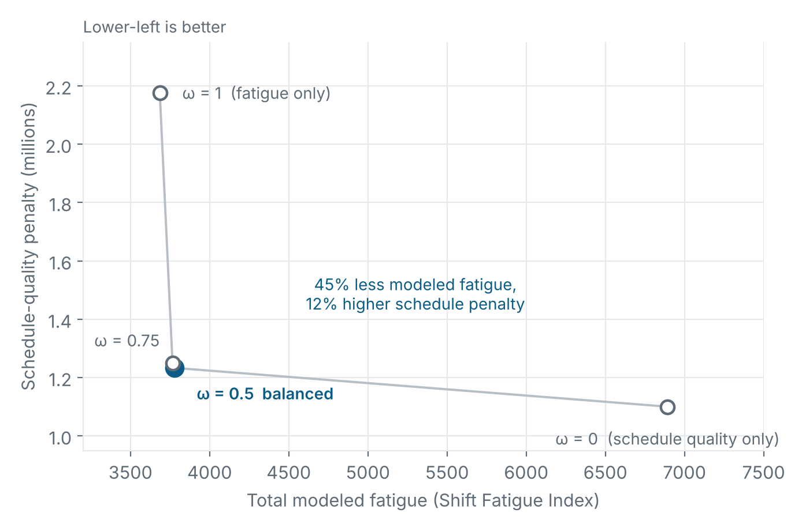
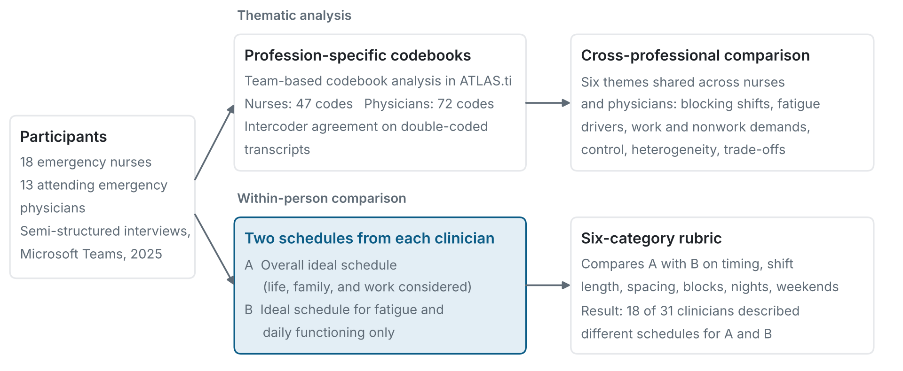
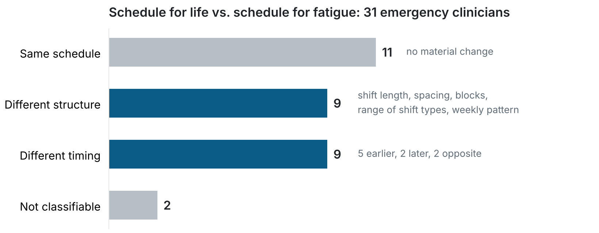
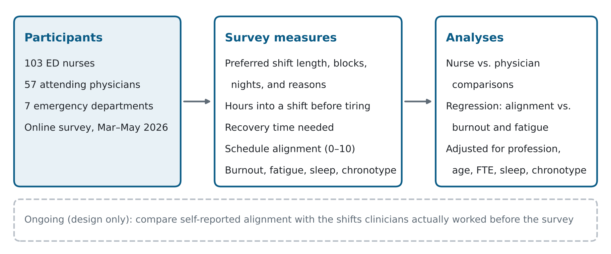
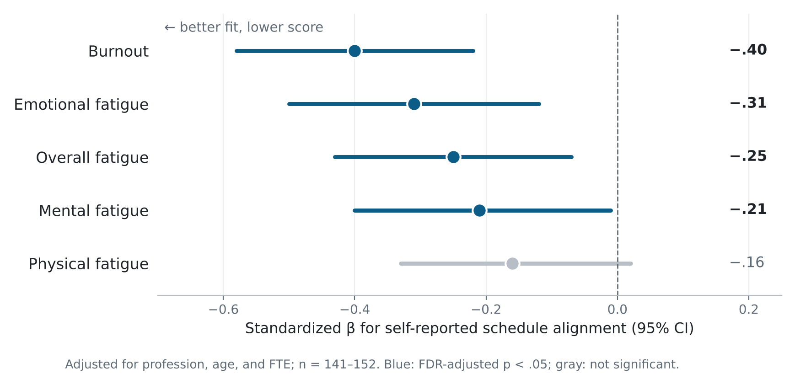
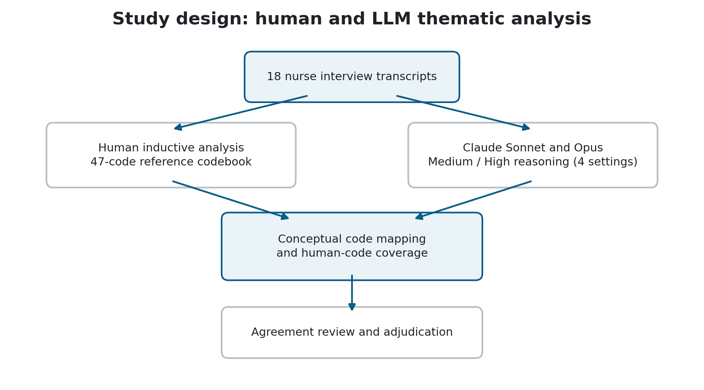
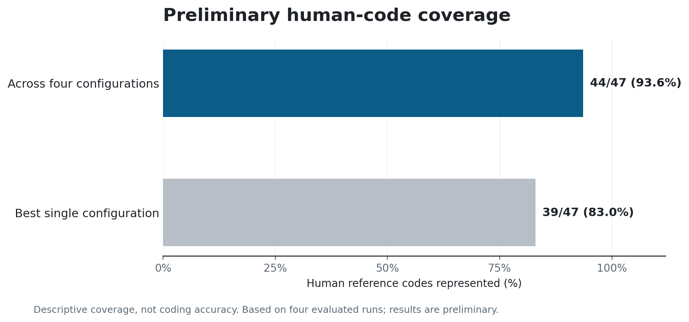

My research develops data-driven, fatigue-aware, and preference-based optimization models for healthcare workforce scheduling, with a focus on emergency department physicians and nurses. I combine operations research, mathematical optimization, statistical analysis, and human-factors research to understand how shift schedules affect clinicians' fatigue, sleep, recovery, burnout, and well-being, and to build schedules that account for them.
The work is part of a CDC/NIOSH-funded, multi-institution project with Prisma Health, Clemson University, Wake Forest University School of Medicine, and the University of Central Florida. I bring together evidence from clinician interviews, surveys, historical work schedules, wearable sleep monitoring, and physiological measurements, and use it to design scheduling approaches that meet clinical staffing requirements while balancing individual preferences, fairness, and fatigue-related risk, in support of clinician well-being, patient safety, and efficient operations.
Advisor: Dr. Kevin M. Taaffe, Clemson University.
Optimization models for emergency physician scheduling
Prisma Health's emergency physicians rotate among seven emergency department locations. A schedule has to keep every department staffed around the clock and respect credentials, rest rules, and leave, and it also decides how tired physicians get, how fairly nights and weekends are shared, and how well each person's life fits around work. I am working on two connected scheduling problems.
1. Personalized schedules: each physician's priorities, weighted by how much they matter
With Dr. Kevin Taaffe and Dr. Hervé Kerivin · Clemson University · in partnership with Prisma Health
Building a monthly schedule by hand is slow, and it rarely reflects what each physician cares about most. I build optimization models that schedule physicians across all hospitals at once: every hospital is covered, staffing rules are met, and each physician's priorities show up in their own schedule.

What makes this different. Many scheduling models let physicians say what they prefer, such as fewer nights or a free weekend, and then treat every preference as equally important for everyone. In practice people care about different things: a physician with young children may care a great deal about avoiding nights, while a colleague barely minds. In our model each physician spends a fixed budget of points across the things that matter to them, and the model uses those points as that physician's own weights. Because everyone has the same budget, no one can mark everything as top priority, and fairness limits keep any one physician from carrying too much of the load.

- Rules that must hold: every shift at every hospital is covered, no physician works at two sites on the same day, workload limits are met, and there is enough rest between shifts.
- Goals to balance: each physician's weighted preferences, time-off requests, healthy work patterns, and fairness across the group.
- Finding the hard part: removing one rule group at a time showed that the rules on work stretches and rest days make the problem far harder than everything else combined.
- A month as a path: to handle those rules better, each physician's month is modeled as a chain of work blocks and rest periods, with penalties for blocks that run too long or rest that is too short.
- Fairer nights: a new fairness design cut the imbalance in night shifts between physicians by about half, with no loss in coverage.
- Testing at scale: an automated pipeline runs day-long experiments on Clemson's Palmetto supercomputer, checks every schedule against the rules, and compares model versions side by side.

Key insight and next steps. Longer runs kept finding better schedules, but the solver's proof of how good they are stopped improving after a few hours, so more computing time alone will not solve larger systems. The next step is decomposition (column generation): build good schedules for each physician separately, then combine them. In parallel I am solving the same problem with Google's CP-SAT constraint programming solver to see whether it reaches schedules of the same quality in less time.
Accepted talk, INFORMS Annual Meeting, November 2026 · manuscript in preparation.
2. Can schedules cut fatigue without giving up coverage or fairness?
Physicians in a hospital network rotate across sites, nights, and weekends, and the same shift can tire people differently depending on their body clock. With Dr. Kevin Taaffe and the project team, I built a mixed-integer model in Python and Gurobi for 90-day schedules across four hospitals. It scores each physician–shift pair with a Shift Fatigue Index (chronotype mismatch, shift end time, and shift length) and penalizes uneven sharing of nights, weekends, and distant-site shifts. Themes from the interview study shaped these penalties. Tests use synthetic instances.

- Fatigue drops by almost half at a modest cost. On a 40-physician instance, a balanced weighting cut total modeled fatigue by 45% (6,893 to 3,777) and the highest individual score by 27%, while other schedule penalties rose 12%.
- Fatigue alone is the wrong target. Weighting only fatigue lowered it just 2% more, nearly doubled other penalties, and cut mean recovery after work blocks from 2.9 to 1.7 days.
- Results are stable across instances. Four random seeds gave feasible rosters with optimality gaps below 4%; distant-site counts differed by at most two.
- Size is the bottleneck. Rosters for 40 and 70 physicians were found within six hours; at 100 or more physicians, none was found.

The index is a transparent proxy, not yet a validated measure. A 2026 shift study pairs post-shift surveys of fatigue and workload with wrist-worn sleep tracking and before-and-after-shift saliva cortisol; these data will calibrate it.
Presented at the Healthcare Systems Process Improvement Conference (Feb 2026) and the IISE Annual Conference & Expo (May 2026). Next: calibration and faster methods (rolling horizon, decomposition) for larger networks.
Interview study: schedules for life vs. schedules for fatigue
To ground the models in clinicians' experience, I led a comparative interview study with 18 emergency nurses and 13 attending emergency physicians at Prisma Health. I co-designed the interview guide and conducted semi-structured interviews on Microsoft Teams (April–June 2025). The team analyzed the transcripts in ATLAS.ti with a separate codebook for each profession and checked intercoder agreement on double-coded transcripts. Each clinician described two schedules: the one they would choose overall, and the one best for their fatigue and daily functioning.

- Preference and fatigue often differ. For 18 of 31 clinicians, the schedule best for fatigue differed from the one they preferred overall: in timing for nine and in structure (shift length, spacing, or blocks) for nine. When timing differed, family obligations, especially childcare, most often pulled the preferred schedule earlier than the hours when clinicians felt they functioned best.
- Shared goals, different fatigue drivers. Both groups valued recovery, predictability, and long stretches off, and grouped shifts to get them. Nurses linked fatigue to consecutive 12-hour shifts, patient volume, and missed breaks; physicians linked it to night work and rapid switches between shift types.
- Control is not the same as recovery. Nurses valued the flexibility of self-scheduling yet still reported fatigue; physicians could state preferences before the schedule was published but had little flexibility afterward.
- Implication for the models. Preference satisfaction and fatigue should be treated as separate objectives rather than one "preference" term. These findings informed the survey questions and the scheduling models.

Early results were presented as a poster at the Prisma Health Research Showcase (November 2025). The full manuscript is in preparation.
Survey study: does schedule fit matter for burnout?
Burnout is common among emergency department clinicians, and shift scheduling is one factor health systems can change. I analyzed a cross-sectional survey of 103 nurses and 57 attending physicians at seven Prisma Health emergency departments (March–May 2026). It asked about preferred shift length, consecutive shifts, and night work; how many hours into a shift clinicians begin to feel tired; how much time off they need to recover; and how well their most recent schedule matched their preferences (0–10). I ran the analysis in Python (pandas, SciPy, statsmodels) using group comparisons, mixed models, and robust regression with false discovery rate control.

- Different preferences. Nurses most often preferred 12-hour shifts (67%); physicians most often preferred 9-hour shifts (49%).
- Shifts outlast tiredness. 76% preferred shifts longer than the point at which they begin to feel tired (a median of 2 hours longer).
- More recovery after long runs and nights. Days off needed after five or more consecutive shifts including a night were 2.0 times (nurses) and 2.5 times (physicians) those needed after two to four shifts.
- Schedule fit and burnout. Clinicians who rated their schedule a better match to their preferences reported lower burnout (standardized β = −0.40); the association held after also adjusting for sleep, chronotype, and shift type.

These results link schedule fit to burnout and inform the preference-weighted scheduling models above. Next, we are comparing self-reported alignment with the shifts clinicians actually worked before the survey.
Poster, Prisma Health Research Showcase, October 2026 · manuscript in preparation.
Can large language models reproduce human thematic analysis?
With S. V. Abrol, V. Prabhu, and K. M. Taaffe · ongoing research
This study examines how well large language models perform inductive thematic analysis of qualitative healthcare interviews, and how their interpretations compare with those of human researchers. Using 18 emergency department nurse interviews and a human-developed reference codebook of 47 codes, we evaluate Claude Sonnet and Opus at medium and high reasoning-effort settings on conceptual alignment, code coverage, coding specificity, and the ability to reproduce higher-order human interpretations.

- Combined coverage. Across the four configurations, at least one model represented 44 of 47 human codes (93.6%).
- Best single configuration. One configuration represented 39 of 47 human codes (83.0%).
- Model differences. Opus generally covered more human codes than Sonnet; raising reasoning effort did not consistently improve coverage.
- Interpretive limits. The models captured concrete scheduling factors, preferences, and reasons well, but had more difficulty with higher-order themes about schedule satisfaction and how current schedules compare with ideal ones.

My role: reviewing and refining human–model code mappings, evaluating prompting and analysis strategies, developing the inter-rater reliability assessment, calculating agreement statistics, and contributing to adjudication, interpretation, and the manuscript.
Preliminary findings, not yet peer reviewed · manuscript in preparation.
Earlier research
At the University of Tennessee Space Institute (2021–2022) I worked on supply chain simulation, learning-based routing, perishable inventory, and production scheduling. See the projects page.